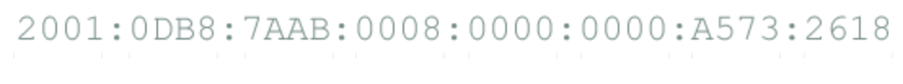

Statystyki ruchu IPv6 zostały zebrane w oparciu o dane pochodzących od pięciu firm, które dostarczają treści poprzez IPv6:
Statystyki ruchu IPv6 zostały zebrane w oparciu o dane pochodzących od pięciu firm, które dostarczają treści poprzez IPv6:
Protokół IPv4 został wprowadzony w 1981 roku i zawiera 4,3 miliardy unikalnych adresów IP, ale pula adresów IPv4 została już rozdysponowana.
Pierwszy raz protokół IPv4 został wykorzystany w latach osiemdziesiątych w sieci ARPANET, w celu połączenia kilkanaście uniwersytetów na terenie USA.
Obecnie nadal jest wykorzystywany w komunikacji w sieci Internet. Każde urządzenie podpięte do sieci ma swój unikalny adres IP. Adresacja IPv4
pozwala na wygenerowanie 2^32 różnych kombinacji adresów IP, ale obecnie nie jest już wystarczająca dla całego świata.
Stąd w roku 1995 wprowadzono standard IPv6, który bardzo rozszerza ilość unikalnych adresów IP. Dokładnie jest to 2^128 różnych kombinacji.
Wyróżnikiem protokołu IPv4 jest 32 bitowa adresacja. Adresy IP zapisuje się zazwyczaj w konwencji kropkowej (ang. Dotted Decimal Notation)
Przykładowy adresu IP zapisany w standardzie IPv4 ma postać czterech liczb dziesiętnych rozdzielonych kropkami:
192.168.1.10
W takim zapisie każdą z czterech liczb zapisuje się jako liczbę dziesiętną z zakresu 0 do 255.
Protokół IPv6 został zaprojektowany jako następca IPv4. Jest to zmodyfikowana kombinacja propozycji wysuniętych w roku 1993 przez Deeringa i Francisa, pod nazwą SIPP (ang. Simple Internet Protocol Plus), którą oznaczone jako IPv6. Początki protokołu IPv6 sięgają roku 1995, kiedy pojawiła się jego specyfikacja. Od tego momentu zaczęto uruchamiać IPv6 w sieciach testowych. Protokół IPv6 spotkał się z zainteresowaniem wielu ośrodków akademickich, ale IPv6 okazuję się być trudnym do upowszechnienia. Adresy stosowane w protokole IPv6 mają długość 128 bitów, więc nie przewiduje się ich niedoboru w dającej się określić przyszłości.
IPv6 jest następcą protokołu IPv4. Jedna z głównych przyczyn wprowadzenia protokołu IPv6 jest brak wolnej przestrzeni adresowej.
W dniu 3 Lutego 2011 roku organizacja ICANN (Internet Corporation for Assigned Names and Numbers) podała, że
"A critical point in the history of the Internet was reached today with the allocation of the last remaining IPv4
(Internet Protocol version 4) Internet addresses from a central pool." . W dniu tym skończyła się wolna przestrzeń adresowa IPv4.
Zdecydowana większość połączeń internetowych generowana jest przez komputery, laptopy, serwery, telefony oraz inne urządzenia,
które identyfikowane są przy pomocy adresów IPv4. Ostatnia pula adresów IPv4 została już rozdysponowane i obecnie nie ma już
możliwości przydziału nowych adresów IPv4. Protokół IPv6 pozwala rozwiązać problem braku IPv4 poprzez dostarczenie przestrzeni adresowej,
wystarczającej do nadania unikalnego adresu IP dla nieograniczonej liczby urządzeń w sieci Internet. Pojawienie się IPv6 stanowi również świetną
okazję do naprawienia wszystkich niedostatków IPv4. Przykładowy adres IPv6 wygląda tak: 2001:cdba:0000:0000:0000:0000:1237:1642
Adres maja 8 sekcji zapisanych w systemie szesnastkowym (heksadecymalnym). Zapis adresu można skracać, np 2001:beef:ac::1. Początkowe zera są opcjonalne, np 0:0:0:0:0:0:0:0
Inne powody stosowania IPv6 to narzucone wymogi, np: na stronie firmy
apple.com
“Starting June 1, 2016 all apps submitted to the App Store must support IPv6-only networking.”
Protokół IPv6 pozostawał w cieniu protokołu IPv4 przez wiele lat, aż do czasu gdy operatorzy ISP (ang. Internet Service Provider) spotkały
się z problemem braku adresacji IPv4. W niektórych krajach dni IPv4 są już policzone, ale zdecydowana większość małych dostawców jeszcze czeka z wdrożeniami.
Obecnie z IPv4 nie można zrezygnować, ale można migrować z IPv4 do IPv6. Mechanizmy migracji to
Dual Stack - urządzenia jednocześnie korzystają z IPv4 oraz IPv6.
Tunelowanie - transport pakietów Ipv6 przez sieć IPv4.
Translacja - tłumaczenie pakietów Ipv6 na IPv4 i odwrotnie.
IPv6 zachowuje dobre cechy IP, odrzuca lub redukuje złe i tam gdzie trzeba, dodaje nowe. IPv6 nie jest zgodny z IPv4, ale jest zgodny z innymi pomocniczymi protokołami Internetu. Najważniesz korzyści z wprowadzenia IPv6 to:
Po pierwsze IPv6 oferuje WIELE adresów. Ile adresów pytasz? Cóż, oto liczba dostępnych adresów 340 282 366 920 938 463 463 374 607 431 768 211 456 Ważnym ulepszeniem IPv6 jest uproszczenie nagłówka. Zawiera on tylko 7 pól w porównaniu do 13 w IPv4. Zmiana ta pozwala routerom szybciej przetwarzać pakiety, tym samym zwiększyć przepustowość sieci i zmniejszać opóźnienia przysyłanych danych. Kolejnym ulepszeniem jest brak opcji. Routery mogą pomijać opcje nie przeznaczone do nich i szybciej przetwarzać pakiety. Następnym obszarem jest wbudowane wsparcie dla bezpieczeństwa IPv6. Kluczowe cechy IPv6 to uwierzytelnianie i ochrona prywatności. Na koniec warto wspomnieć o ulepszonej jakości usług w protokole IPv6. Z uwagi na rozwój multimediów w Internecie mechanizmy QoS (ang. Quality of Service) są kluczowe dla rozwoju multimediów.
Obecnie większość ludzi ma w domu lub pracy komputer, smartfon, tablet, inteligentny telewizor, a wiele nowych samochodów ma WiFi lub może być podłączona do sieci. Wszystkie te urządzenia wymagają pewnego sposobu przekazywania informacji do i z Internetu. W tym miejscu pojawią się dodatkowe adresy. Chociaż Internet nie rozpadnie się jutro, to jednak wymaga aktualizacji. Tam właśnie pojawia się protokół IPv6 i dodatkowe adresy. Szkielet IPv4 został przydzielony na kilka miliardów adresów IP. W tamtym okresie komputer osobisty był ciągle w sferze marzeń dla większości ludzi, a kilka miliardów adresów wydawało się wystarczające. Po kilku dekadach postępu technicznego mamy więcej komputerów niż adresów IP. Wprawdzie pojawiły się rozwiązania pozwalające "rozciągnąć" przestrzeń adresów IPv4, ale są to rozwiązanie doraźne. Zbliża się czas, w którym nie będziemy już mogli wycisnąć więcej z translacji NAT (ang. Network Address Translation) i będziemy potrzebować lepszych opcji. IPv6 może wyeliminowanie wielu problemów, które nas obecnie nękają.
Raporty dotyczące globalnego wykorzystania protokołu IPv6 można znaleść na stronie www.worldipv6launch.org.
Raport (Network Operator Measurements, 14th June 2017) pokazuje, że więcej niż 84% połączeń pochodzących od klientów T-Mobile USA
oraz Verizon Wireless do kilku największych portali i usługodawców internetowych było zestawianych z wykorzystaniem IPv6.
Wśród europejskich operatorów Deutsche Telekom AG w tym samym czasie zestawił ponad 43% połączeń z wykorzystaniem IPv6, a
Czeski T-Mobile podaje wartość 5.29%. Jak wyglądają polskie statystyki?
W zestawieniach Orange Poland podana jest wartość 14.47%.
Statystyki ruchu IPv6 zostały zebrane w oparciu o dane pochodzących od pięciu firm, które dostarczają treści poprzez IPv6:
Wiele z głównych serwerów www jest skonfigurowanych i dostępnych również dla IPv6 lub przynajmniej go przetestowało.
Strony takie jak Facebook, Google, YouTube, Yahoo i inni są gotowe do pracy z IPv6.
Netflix beta testuje streaming usług video w sieciach IPv6.
Przykładowe adresy stron, które dostępne są poprzez IPv6:
Funkcje bezpieczeństwa w IPv6 dodają zarówno dobre jak i złe rzeczy, jeśli chodzi o bezpieczeństwo. Zalety zabezpieczeń protokołu IPv6 to: Szyfrowanie warstwy sieciowej i uwierzytelnianie (szyfrowanie i uwierzytelnianie wszystkich Twoich danych na poziomie IP). Ogromna przestrzeń adresowa umożliwia wysoką odporność na złośliwe skanowanie. Nie jest łatwe zautomatyzowanie skanowania. Znacznie trudniej jest "odgadnąć" adres lub zainfekować robakiem urządzenie. Automatyczna konfiguracja adresów IP utrudnia testowanie i wykrywanie słabości systemu. Wady zabezpieczeń protokołu IPv6 to: Sieci będą bardziej podatne na włamania, jeśli sieć będzie źle zaprojektowana. IPv6 jest ciągle "zbyt nowy" dla większości administratorów, więc hakerzy łatwiej mogą wykorzystać brak wiedzy, aby uzyskać dostęp do systemów w sieciach IPv6.
Najczęściej protokół IPv6 wykorzystywany jest przy dostępie mobilnym. Wynika to z faktu, że przyłączenie stale przyrastającej liczby urządzeń mobilnych wymaga dużej liczby unikalnych adresów IP. Korzystanie z protokołu IPv6 w przypadku połączeń mobilnych będzie łatwiejsze do osiągnięcia i potencjalnie szybsze z powodu braku konfiguracji danych, które muszą być przechowywane na serwerze, tak jak jest to obecnie w protokołe IPv4.
